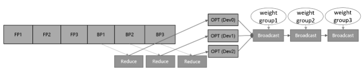

优化器并行¶

概述¶
在进行数据并行训练时，模型的参数更新部分在各卡间存在冗余计算，优化器并行通过将优化器的计算量分散到数据并行维度的卡上，在大规模网络上（比如Bert、GPT）可以有效减少内存消耗并提升网络性能。
在数据并行模式下使能优化器并行，框架会将需要更新的参数进行分散到不同卡上，各自更新后再通过Broadcast算子在集群间做权重共享。需要注意的是参数量应当大于机器数，当前只支持Lamb和AdamWeightDecay优化器。
在auto_parallel或者semi_auto_parallel模式下使能优化器并行，如果经过策略切分后的参数在机器间存在重复切片，并且shape的最高维可以被重复切片的卡数整除，框架会以最小切片的方式保存参数并在优化器中更新。该模式下支持所有优化器。
| 并行模式 | 参数更新方式 | 优化器支持 | 后端支持 |
|---|---|---|---|
| 数据并行 | 参数分组更新，然后广播到所有卡 | Lamb、AdamWeightDecay和AdaFactor | Ascend |
| 全/半自动并行 | 参数按数据并行度切分成N份，每张卡更新当前卡上的参数 | 所有优化器 | Ascend、GPU |
无论是哪种模式，优化器并行不会影响原有正反向网络的计算图，只会影响参数更新的计算量和计算逻辑。
基本原理¶
传统的数据并行模式将模型参数在每台设备上都有保有副本，把训练数据切分，在每次迭代后利用通信算子同步梯度信息，最后通过优化器计算对参数进行更新。数据并行虽然能够有效提升训练吞吐量，但并没有最大限度地利用机器资源。其中优化器会引入冗余内存和计算，消除这些冗余是需关注的优化点。
在一个训练迭代中，数据并行为了收集各卡上不同样本产生的参数梯度，引入通信操作将梯度在多卡间同步。因为不涉及模型并行，每张卡上的优化器运算其实是基于相同的参数、在相同的方向上更新。而消除优化器冗余的根本思想就是将这部分内存和计算量分散到各个卡上，实现内存和性能的收益。
如果要对优化器实现并行运算，有两种实现思路，参数分组(Weights Grouping)和参数切分(Weights Sharding)。其中参数分组是将优化器内的参数及梯度做层间划分，大致的训练流程如图1所示。将参数和梯度分组放到不同卡上更新，再通过通信广播操作在设备间共享更新后的权值。该方案的内存和性能收益取决于参数比例最大的group。当参数均匀划分时，理论上的正收益是N-1/N的优化器运行时间和动态内存，以及N-1/N的优化器状态参数内存大小，其中N表示设备数。而引入的负收益是共享网络权重时带来的通信时间。

图1：参数分组训练流程示意图
另一种实现方式参数切分是对参数做层内划分，对每一个参数及梯度根据设备号取其对应切片，各自更新后再调用通信聚合操作在设备间共享参数。这种方案的优点是天然支持负载均衡，即每张卡上参数量和计算量一致，缺点是对参数形状有整除设备数要求。该方案的理论收益与参数分组一致，为了扩大优势，框架做了如下几点改进。
首先，对网络中的权重做切分，可以进一步减少静态内存。但这也需要将迭代末尾的共享权重操作移动到下一轮迭代的正向启动前执行，保证进入正反向运算的依旧是原始张量形状。此外，优化器并行运算带来的主要负收益是共享权重的通信时间，如果我们能够将其减少或隐藏，就可以带来性能上的提升。通信跨迭代执行的一个好处就是，可以通过对通信算子适当分组融合，将通信操作与正向网络交叠执行，从而尽可能隐藏通信耗时。通信耗时还与通信量有关，对于涉及混合精度的网络，如果能够使用fp16通信，通信量相比fp32将减少一半。综合上述特点，参数切分的实现方案如图2所示。

图2：参数切分训练流程示意图
在实际网络训练的测试验证中，我们发现参数切分带来的内存收益是显著的。尤其是对于大规模网络模型而言，通常选择当下流行的Adaptive Moment estimation (Adam)和Layer-wise Adaptive Moments optimizer for Batching training (LAMB)训练网络，优化器自身的参数量和计算量不容忽视。经过参数分组，网络中的权重参数和优化器中的两份状态参数都减少了N-1/N倍，极大节省了静态内存空间。这为增大单轮迭代样本数量、提升整体训练吞吐量提供了可能，有效解决了大规模网络训练的内存压力。
MindSpore实现的优化器参数切分还具有与算子级并行混合使用的优势。当算子级模型并行参数未切满时，可以继续在数据并行的维度上进行优化器参数切分，增大机器资源的利用率，从而提升端到端性能。
操作实践¶
样例代码说明¶
目录结构如下：
└─sample_code
├─distributed_optimizer_parallel
├── fusion_example.py
├── rank_table_2pcs.json
├── rank_table_8pcs.json
└── run_fusion_example.sh
其中每个文件的作用如下：
fusion_example.py：优化器融合的示例代码，阐述了如何配置优化器的融合标记。
rank_table_2pcs.json：RANK_TABLE_FILE的2卡配置文件。
rank_table_8pcs.json：RANK_TABLE_FILE的8卡配置文件。
run_fusion_example.sh：优化器融合代码的启动脚本。
开启优化器并行¶
在mindspore.set_auto_parallel_context中提供了enable_parallel_optimizer选项，将其配置为True后，即可使能优化器并行，默认对所有占用内存不小于64KB的参数进行优化器切分。
import mindspore as ms
ms.set_auto_parallel_context(enable_parallel_optimizer=True)
配置参数优化器并行¶
此外，用户还可以自定义某些参数是否优化器切分。Parameter提供了一个parallel_optimizer的参数，用来配置当前的参数是否进行优化器切分。因此用户单独针对每个参数配置是否开启优化器并行，如下所示：
import numpy as np
import mindspore as ms
param = ms.Parameter(ms.Tensor(np.ones((10, 2))), name='weight1', parallel_optimizer=True)
# Another way to set the parallel_optimizer attribute
param2 = ms.Parameter(ms.Tensor(np.ones((10, 2))), name='weight2')
param2.parallel_optimizer = False
优化器并行特性还提供了配置字典parallel_optimizer_config。通过在context中配置不同的键值，可以达到不同的效果：
gradient_accumulation_shard(bool)：如果为True，则累积梯度变量将在数据并行度上进行分片。在累积梯度时，每个累积迭代中将会引入额外的通信(ReduceScatter)以保证计算的一致性，但节省了大量的计算设备内存(例如GPU显存)，因此可以使模型以更大的批量进行训练。仅当模型在流水线并行训练或梯度累积中设置此配置，并且具有数据并行维度时，此配置才会有效。默认值为True。import mindspore as ms ms.set_auto_parallel_context(parallel_optimizer_config={"gradient_accumulation_shard": True}, enable_parallel_optimizer=True)
parallel_optimizer_threshold(int)：该值表示切分参数时，要求目标参数所占内存的最小值。当目标参数小于该值时，将不会被切分。import numpy as np import mindspore as ms param = ms.Parameter(ms.Tensor(np.ones((10, 2)), dtype=ms.float32), name='weight1') # float32类型占用内存4Bytes: # param_size = np.prod(list(param.shape)) * 4 = (10 * 2) * 4 = 80B < 24KB, 不会被切分 ms.set_auto_parallel_context(parallel_optimizer_config={"parallel_optimizer_threshold": 24})
配置通信融合¶
在设置参数优化器并行一节中，我们阐述了如何配置每个参数的优化器并行属性。在全/半自动模式下，每个参数都会产生一个对应的AllGather操作和ReduceScatter操作。这些通信算子是自动并行框架自动插入的。然而，随着参数量增多，对应的通信算子也会增多，通信操作产生的算子调度和启动都会产生更多的开销。因此，可以通过cell提供的set_comm_fusion方法，对每个cell内的参数对应的AllGather和ReduceScatter操作配置融合标记。
如下述的代码所示，针对实例化后的DenseLayer，调用set_comm_fusion方法，为每一层设置fusion值。
"""Parallel Optimizer Fusion Example"""
from mindspore.communication import init
from mindspore import nn
import mindspore as ms
init()
ms.set_auto_parallel_context(parallel_mode=ms.ParallelMode.SEMI_AUTO_PARALLEL, enable_parallel_optimizer=True)
class DenseLayer(nn.Cell):
"""A base layer with two dense layer"""
def __init__(self):
super().__init__()
self.input_mapping = nn.Dense(10, 10)
self.output_mapping = nn.Dense(10, 10)
def construct(self, x):
x = self.input_mapping(x)
return self.output_mapping(x)
class Net(nn.Cell):
"""An network with many dense layers"""
def __init__(self):
super().__init__()
self.layer1 = DenseLayer()
self.layer2 = DenseLayer()
self.layer3 = DenseLayer()
self.layer1.set_comm_fusion(0)
self.layer2.set_comm_fusion(1)
self.layer3.set_comm_fusion(2)
def construct(self, x):
x = self.layer1(x)
x = self.layer2(x)
x = self.layer3(x)
return x
net = Net()
for item in net.trainable_params():
print(f"The parameter {item.name}'s fusion id is {item.comm_fusion}")
对应的输出如下，表示了每层特定dense的funsion值：
The parameter layer1.input_mapping.weight's fusion id is 0
The parameter layer1.input_mapping.bias's fusion id is 0
The parameter layer1.output_mapping.weight's fusion id is 0
The parameter layer1.output_mapping.bias's fusion id is 0
The parameter layer2.input_mapping.weight's fusion id is 1
The parameter layer2.input_mapping.bias's fusion id is 1
The parameter layer2.output_mapping.weight's fusion id is 1
The parameter layer2.output_mapping.bias's fusion id is 1
The parameter layer3.input_mapping.weight's fusion id is 2
The parameter layer3.input_mapping.bias's fusion id is 2
The parameter layer3.output_mapping.weight's fusion id is 2
The parameter layer3.output_mapping.bias's fusion id is 2
在编译图的流程中，相同融合标记并且是相同的通信操作，会被融合成一个通信操作。从而减少通信操作的数量。对于融合标记为0的通信算子时，优化流程中不会对它们进行融合。
开启优化器切分时，网络中每个参数都会产生一个相应的通信算子，然而频繁地调用通信算子将造成较多的算子启动消耗。将这些通信算子融合成一个通信算子，是最有效减少通信算子个数的办法。MindSpore提供了但这样会导致计算资源的浪费。例如，将所有的通信算子融合成一个算子后，在当前训练迭代中，NPU需要等待切分的参数汇聚完成后才能进行网络的前向计算。这样会造成设备的等待。
为了避免上述问题，可以将网络参数进行分组融合：在上一组参数进行的计算的同时，进行下组参数的通信，使得计算和通信能够互相隐藏。这就是上述代码将layer2和layer3设置不同fusion值的原因。
运行代码¶
上述代码需要在配置分布式变量后才可以运行。Ascend环境需要配置RANK_TABLE_FILE、RANK_ID和DEVICE_ID。配置的过程请参考此处，GPU环境需要配置OpenMPI、NCCL和HOST_FILE，配置的过程请参考此处。
Ascend分布式相关的环境变量有：
RANK_TABLE_FILE：组网信息文件的路径。rank_table_file文件可以使用models代码仓中的hccl_tools.py生成，可以从此处获取。
DEVICE_ID：当前卡在机器上的实际序号。
RANK_ID：当前卡的逻辑序号。
GPU分布式相关的环境变量：
HOST_FILE：描述多卡训练时的设备IP和个数。文件每一行格式为[hostname] slots=[slotnum]，hostname可以是ip或者主机名。需要注意的是，不同机器上的用户名需要相同，但是hostname不可以相同。
用户可以通过此处获取上述的此文档中的脚本。执行下述的bash脚本即可运行程序，输出日志在device0/train.log0文件。
#!/bin/bash
set -e
echo "=============================================================================================================="
echo "Please run the script as: "
echo "bash run_fusion_example.sh DATA_PATH RANK_SIZE"
echo "For example: bash run_fusion_example.sh 8"
echo "It is better to use the absolute path."
echo "This example is expected to run on the Ascend environment."
echo "=============================================================================================================="
RANK_SIZE=$1
EXEC_PATH=$(pwd)
test_dist_8pcs()
{
export RANK_TABLE_FILE=${EXEC_PATH}/rank_table_8pcs.json
export RANK_SIZE=8
}
test_dist_2pcs()
{
export RANK_TABLE_FILE=${EXEC_PATH}/rank_table_2pcs.json
export RANK_SIZE=2
}
test_dist_${RANK_SIZE}pcs
for((i=0;i<${RANK_SIZE};i++))
do
rm -rf device$i
mkdir device$i
cp ./fusion_example.py ./device$i
cd ./device$i
export DEVICE_ID=$i
export RANK_ID=$i
echo "start training for device $i"
env > env$i.log
pytest -s -v ./fusion_example.py > train.log$i 2>&1 &
cd ../
done
echo "The program launch succeed, the log is under device0/train.log0."
在当前目录下配置完RANK_TABLE_FILE之后，下述的命令要求用户拥有8张Ascend 910设备。运行命令如下：
bash run_fusion_example.sh 8